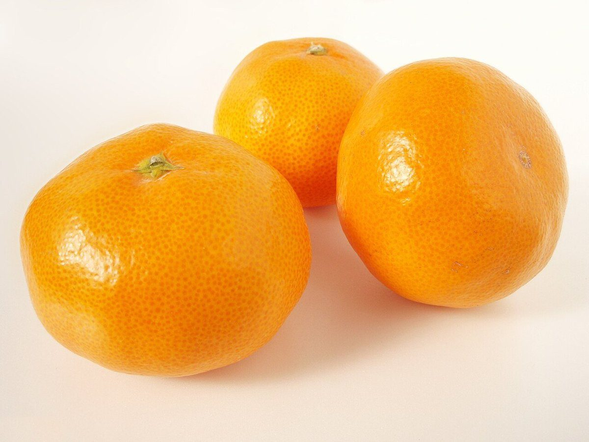

ふた折り目
メニュー
メニューと価格は準備中です。ここでは、もう一度折って扇の形になった生地に見立てて、空きの枠を4つ用意しました。
下の4つの枠は、お店のメニュー内容ではありません。決まり次第、お店から教えていただいた内容に差し替えます。
- 1メニューA準備中
- 2メニューB準備中
- 3メニューC準備中
- 4メニューD準備中
メニュー名・価格・提供の有無は、確認できていないためすべて準備中としています。
色見本のイメージ
扇の色、紫とだいだい。
このサイトは、ブルーベリーのような濃い紫と、みかんのようなだいだい色を基調にしています。これは制作側が選んだ配色で、お店のメニューを示すものではありません。

